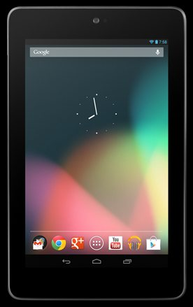

The Autopsy Report · Device #074
The Nexus 7 (2012)
Google and ASUS built the $199 tablet that made cheap good — a Tegra 3, a great screen, and an unlockable bootloader.
What is this thing?
The Nexus 7 (2012) is the 7-inch tablet Google co-developed with ASUS, announced at Google I/O in June 2012 and released on July 13, 2012, starting at $199 for 8 GB. Wikipedia It was the first device to ship with Android 4.1 Jelly Bean, and it reset expectations for what a cheap tablet could be.
Inside is an NVIDIA Tegra 3 — a quad-core chip better known from phones — with 1 GB of RAM, NFC, and GPS: a spec sheet that embarrassed tablets costing twice as much. iFixit teardown
Not yet on our bench
This device is not on our bench. We don't own one, we haven't opened one, and we haven't powered one on. Everything on this page comes from public records: government filings, published teardowns by repair shops and journalists, and manufacturer documents. That's a legitimate way to learn a device's story — and it's also a limited one. There are no BareBoard photos, measurements, boot logs, or firmware notes here, because we haven't earned them yet.
When a unit of the Nexus 7 (2012) does reach our bench, this page gets a second edition: our own board photography, our own measurements, and whatever the device tells us when it wakes up. Until then, what follows is the public record, carefully sourced, with the gaps labeled as gaps.
A short history
- May 30, 2012The FCC grants the Wi-Fi model's equipment authorization (FCC ID MSQME370T), registered to ASUSTeK — a month before the public announcement. FCC filing
- June 27, 2012Google announces the Nexus 7 at Google I/O. Wikipedia
- July 10, 2012The FCC filing's internal photos and user manual become public after short-term confidentiality expires. FCC filing
- July 13, 2012The Nexus 7 goes on sale at $199. Wikipedia
- July 2012iFixit tears it down and scores it 7 out of 10 for repairability — easy to open, standard screws, modular parts. iFixit teardown · TechSpot
The outside
A 7-inch, 1280×800 IPS display in a soft-touch plastic body — no aluminum here, and that was the point: every dollar went into the screen and the chip. Wikipedia The back carries the Nexus logo and a subtle dimpled texture.
The launch render below is Google's own press image for the device — full credit in the caption.

The board
iFixit's teardown describes a single main board with the Tegra 3 under a heat spreader, the Hynix memory and Kingston flash nearby, and the AzureWave Wi-Fi module on its own small board. iFixit teardown Tweaktown's coverage of the teardown notes the straightforward, repair-friendly layout. TweakTown
The FCC's internal photos (public since July 10, 2012) show the same arrangement, with the NFC antenna trace visible on the back cover. FCC filing We have not photographed the board ourselves.
Under the microscope: the chips
What's on the board, what each part does, and how sure we are — all from public teardown records, since we haven't seen the board ourselves. Likely means the public hardware record agrees on it. Confirmed is reserved for primary sources we could verify directly, like the government's own filing. Every row links somewhere you can read more.
| Chip | What it does | How we know | Dig deeper |
|---|---|---|---|
| NVIDIA T30L Tegra 3 | The main processor — four ARM Cortex-A9 cores plus a low-power companion core. | Likely Identified by iFixit and every launch teardown. | iFixit teardown |
| Hynix H5TC2G83CFR 1 GB DDR3 |
Working memory. | Likely Read off the board by iFixit. | iFixit news |
| Kingston KE44B-26BN 8 GB flash |
Storage for Android and user data. | Likely Identified in teardown chip lists. | iFixit teardown |
| AzureWave AW-NH665 | The Wi-Fi module. | Likely Module-level ID from teardown photos. | TweakTown |
| Broadcom BCM4751 | GPS receiver. | Likely Identified in teardown chip lists. | iFixit teardown |
| NXP 65N04 | NFC controller — the tap-to-share radio. | Likely Identified in teardown chip lists. | iFixit news |
| InvenSense MPU-6050 | Accelerometer plus gyroscope — knows which way is up. | Likely Identified in teardown chip lists. | iFixit teardown |
| Maxim MAX77612A | Power management — makes the voltages everything else needs. | Likely Identified in teardown chip lists. | iFixit news |
| Hydis HV070WX2 | The 7-inch 1280×800 display panel. | Likely Panel marking read in teardowns. | iFixit teardown |
Not in the public chip lists: the touchscreen controller and the audio codec. Google published factory images and kernel sources for this device (it's a Nexus), which is more than most tablets of the era ever got.
The government's file on this device
The Wi-Fi Nexus 7 went through the FCC as MSQME370T, registered to ASUSTeK Computer Inc. The grant is dated May 30, 2012; internal photos and the user manual became public on July 10, 2012. FCC filing Confirmed — straight from the filing index.
The filing lists Bluetooth at 12.6 mW and Wi-Fi at 154.5 mW. It also covers the NFC radio at 13.56 MHz — listed with no output power, as short-range NFC filings typically are. FCC filing The schematics, block diagram, and operational description show no public availability date — they stayed confidential.
Debug and service modes
Google publicly documents the fastboot workflow for Nexus devices: the factory-images page describes flashing official system images with fastboot commands, which requires the bootloader mode the device ships with. Google factory images The bootloader on Nexus hardware is unlockable by design — that was the whole point of the Nexus line.
We have not unlocked, flashed, or fastbooted any Nexus 7. The mode is listed because Google documents the workflow — not because we've run it.
Our posture on all of the above: we describe what's publicly documented, and we don't go knocking. No device has been probed, reflashed, or opened on our bench — there is nothing here but reading.
What public records show
Repairability was a feature. iFixit gave the Nexus 7 a 7/10: the back comes off with standard tools, the battery isn't buried under everything, and parts are modular. For a $199 tablet in 2012, that was remarkable. TechSpot
The FCC filing is unusually readable. Grant dates, photos, manual, and power figures are all public; only the deep engineering documents (schematics, block diagram) stayed confidential. That's about as transparent as these filings get. FCC filing
What we haven't done
- We have not opened a 2012 Nexus 7, photographed its board, or measured anything on it.
- We have not captured a boot log or entered fastboot mode on this model.
- We have not verified the touchscreen controller or audio codec, which the public teardowns don't name.
By the numbers
- Model: Nexus 7 (2012), Wi-Fi; co-developed by Google and ASUS Wikipedia
- FCC ID: MSQME370T (ASUSTeK) FCC filing
- Main chip: NVIDIA Tegra 3 (T30L) iFixit teardown
- Memory: 1 GB DDR3 iFixit news
- Display: 7 in, 1280×800 IPS (Hydis panel) Wikipedia iFixit teardown
- Storage: 8/16/32 GB Wikipedia
- Released: July 13, 2012, from $199 Wikipedia
- Wireless: Wi-Fi b/g/n, Bluetooth, NFC, GPS Wikipedia
- Repairability: 7/10 TechSpot
Words to know
Every term this page uses, in plain English. No prior knowledge required.
- Bootloader
- The first program that runs when a device powers on — it decides whether to start Android or wait for instructions.
- Fastboot
- A mode on Nexus devices for talking to the bootloader over USB: Google documents it for flashing official system images.
- NFC
- Near-field communication — the short-range radio used for tap-to-share and mobile payments.
- PMIC
- Power-management IC: the chip that makes all the different voltages the board needs from the battery.
- FCC ID
- The ID the FCC assigns to each approved wireless product. Punch it into fccid.io and the whole public filing comes up.
- Repairability score
- iFixit's 1-to-10 rating of how fixable a device is. 10 is a dream; 1 is glued shut.
Sources & confidence
- Chip identities: iFixit's 2012 teardown and its contemporary news write-up, plus TweakTown and TechSpot coverage. Marked Likely throughout — we haven't seen the board ourselves.
- FCC ID, grant dates, confidentiality dates, and transmit powers: the FCC filing index for MSQME370T — a primary source. High confidence.
- Release date, price, and launch specs: the device's encyclopedia entry, cross-checked against launch coverage.
- Fastboot workflow: Google's own factory-images documentation.
- Anything not listed here is unknown until the bench says otherwise. We'll say so, out loud, when that's the case.
Legal note. BareBoard is an educational project. Everything on this page is assembled from public records and freely-licensed photography credited in its caption. We don’t publish, host, or distribute firmware, keys, passwords, or credentials. Product names and trademarks belong to their respective owners and appear here only to identify the hardware. If you believe anything here infringes your rights, contact us and we’ll address it promptly.